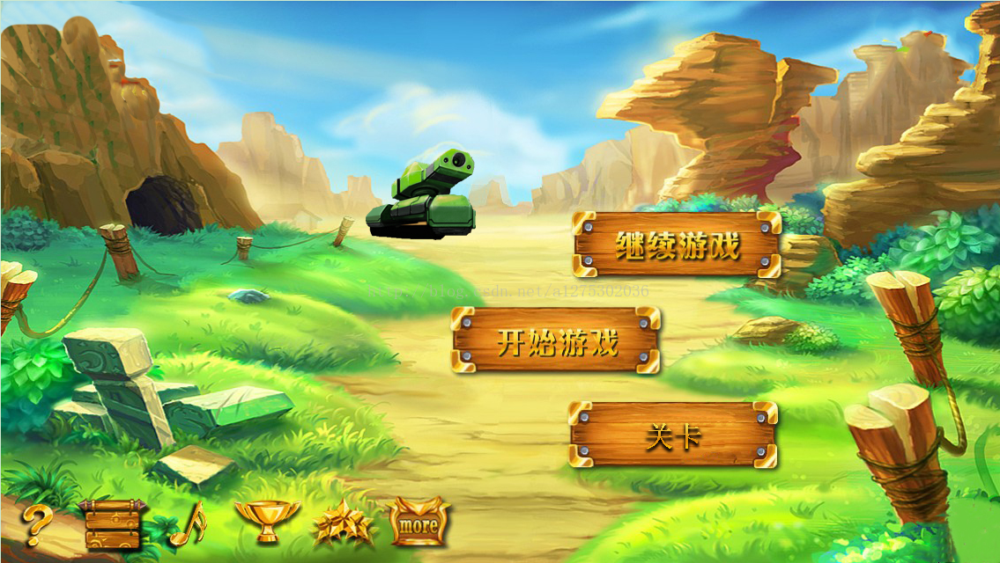

>点击进入切水果小游戏<
>点击进入切水果小游戏<
切水果小游戏是由洛神编程组兼毕峻溪网站开发有限公司历时1月研发出来的高端小游戏，自从iOS和Android兴起以来，水果忍者游戏一直是这两个平台上面相当热门的游戏，很多玩家都会在工作学习之余切切水果，打发时间。今天，HTML5网页版水果忍者游戏同样给大家带来了不同的感觉，赶紧来试试这款好玩的HTML5网页版水果忍者游戏吧。
|
>点击进入象棋小游戏<
象棋小游戏是由洛神编程组兼毕峻溪网站开发有限公司历时1月研发出来的高端小游戏，棋类游戏在桌面游戏中已经非常成熟，中国象棋的版本也非常多。今天这款基于HTML5技术的中国象棋游戏非常有特色，我们不仅可以选择中国象棋的游戏难度，而且可以切换棋盘的样式。程序写累了，喝上一杯咖啡，和电脑对弈几把吧，相信这HTML5中国象棋游戏的实现算法你比较清楚，可以打开源码来研究一下这款HTML5中国象棋游戏。
|
 >点击进入吃豆人小游戏<
>点击进入吃豆人小游戏<
吃豆人小游戏是由洛神编程组兼毕峻溪网站开发有限公司历时1月研发出来的高端小游戏，HTML5吃豆人游戏，画面上有一个吃豆人和一群怪物，你需要控制吃豆人移动吃掉路上的小豆子，一旦吃豆人遇到怪物被吃掉的时候，你就GAME OVER了。这款HTML5游戏还有一点没完善，就是吃豆人碰到怪物的时候不能被怪物吃掉，有兴趣的同学可以继续把它完善。HTML5游戏开发不仅需要技术，也需要创意。
|
>点击进入太空飞船小游戏<
太空飞船小游戏是由洛神编程组兼毕峻溪网站开发有限公司历时1月研发出来的高端小游戏，这又是一款制作精良的HTML5游戏，该HTML5游戏的主角是一架英勇威武的太空战机，进入游戏后按”Z”键发射子弹，消灭敌机。该HTML5战机游戏的特点是：1、游戏画面非常华丽逼真，并且加入声音元素，让游戏更加迷人；2、游戏元素很多，敌机类型和发射子弹类型也很多，让玩家不会枯燥。
|
>点击进入Flappy小游戏<
Flappy小游戏是由洛神编程组兼毕峻溪网站开发有限公司历时1月研发出来的高端小游戏，前段时间Flappy Bird游戏那是相当的火，有无数年轻人为之疯狂，这里我们要分享一款奇葩版的Flappy Bird——HTML5 Flappy Text游戏，用若干个字母来代替bird，每触碰一个障碍，字母就会少一个。一起来玩玩吧。
|

>点击进入坦克大战小游戏<
坦克大战小游戏是由洛神编程组兼毕峻溪网站开发有限公司历时1月研发出来的高端小游戏，由多个css文件构成，考虑到游玩者的多方面体验，益智有趣，欢迎游玩！
|
 >点击进入超级玛丽小游戏<
>点击进入超级玛丽小游戏<
超级玛丽小游戏是由洛神编程组兼毕峻溪网站开发有限公司历时1月研发出来的高端小游戏，还记得小时候一起玩过的超级玛丽冒险游戏吗？是的，那是我们小时候很火的一款游戏，今天老外利用HTML5技术让超级玛丽可以在网页上跑了，HTML5版的超级玛丽虽然没有原版的功能强大，但是如果你有兴趣，完全可以把它写完善了。HTML5真的很强大，HTML5游戏方面更是犀利。
|
Copyright © 2022-2023 毕峻溪网站开发有限公司